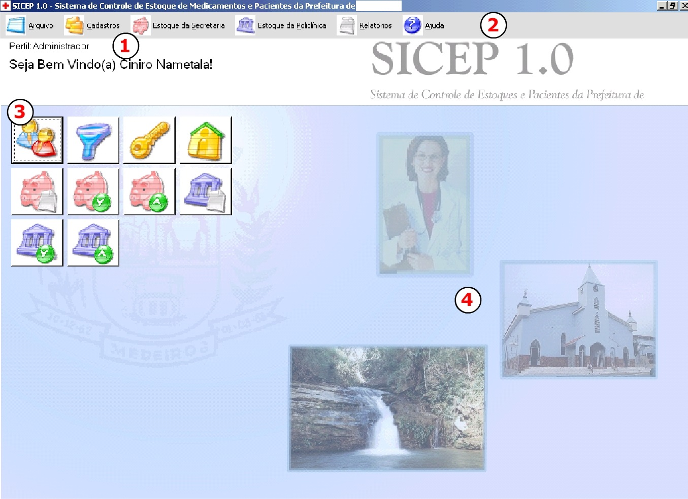

|
|
||||
|
COMO USAR A TELA PRINCIPAL A tela
principal é mostrada assim que o usuário executa
o SICEP 1.0 e em seguida entra com login e senha corretos. Esta tela filtra de acordo
com o perfil do usuário quais tarefas estarão habilitadas ou não. Esta tela também
contém botões para acesso rápido com figuras intuitivas. Basta clicar em um deles
para poupar-se o trabalho de navegar pelo menu principal. AS ÁREAS DA TELA
 Oriente-se pelos números exibidos na figura para
visualizar suas funções explicadas:
|
||||
|
|